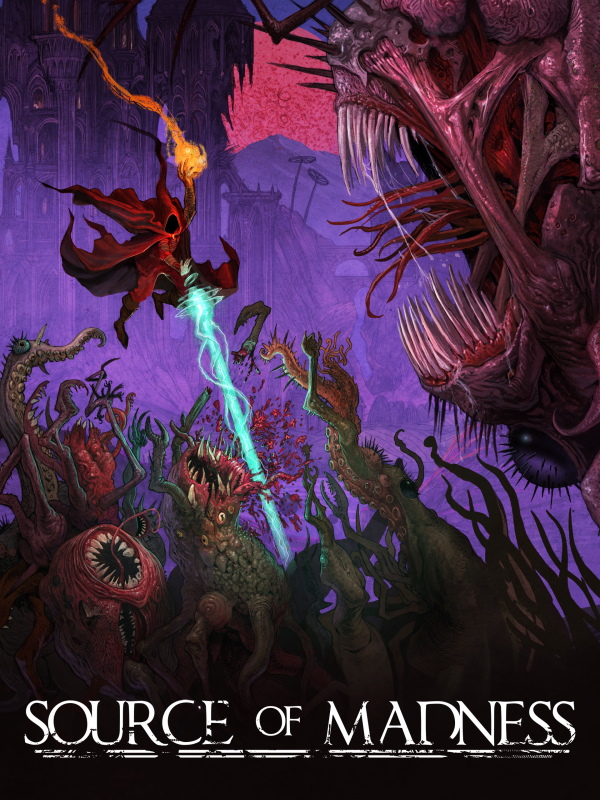

Source of Madness
Source of Madness
Details
|  | |
| Playtime | Not Played |
| Last Activity | Never |
| Added | 09/09/2025 17:13:15 |
| Modified | 09/09/2025 17:14:05 |
| Completion Status | Not Played |
| Library | Steam |
| Source | Steam |
| Platform | PC (Windows) |
| Release Date | 11/05/2022 |
| Community Score | 60 |
| Critic Score | |
| User Score | |
| Genre | Adventure Platform Role-playing (RPG) |
| Developer | Carry Castle |
| Publisher | Thunderful |
| Feature | Multiplayer Single Player |
| Links | Facebook YouTube Official Website Steam Discord GOG Epic Twitch Playstation Nintendo Xbox |
| Tag | |
Description

Source of Madness is a side-scrolling dark action roguelite set in the Loam Lands, a twisted Lovecraftian inspired world powered by procedural generation and AI machine learning. Take on the role of a new Acolyte as they embark on a nightmarish odyssey. Uncover the cosmic secrets of the Loam Lands and The Tower of Madness, the moon’s mysterious Citadel.
The horrific monsters you face are never the same, concocted with procedural generation and animated using a neural network AI
Explosive close-combat magic, labyrinthine environmental exploration, powerful loot management and a skill tree filled with abilities, classes, and spells
Rendered in a beautiful AI assisted art style, the fascinating world of the Loam Lands reveals a deep arcane lore as players uncover its many secrets